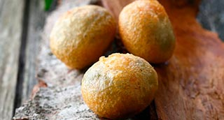

Buñuelos de Bacalao rellenos de allioli Salsa Brava de Almendras
"Bacalao, Allioli, Almendras"

| Bacalao remojado | 350 gr. |
| Agua mineral | 200 ml |
| Laurel | 1 hj. |
| Mantequilla | 50 gr. |
| AOVE | 50 ml. |
| Harina | 150 gr. |
| Huevos | 3 un. |
| Ajos | 4 dt. |
| Perejil picado | 2 c.s. |
| Sal | 4 gr. |
| Allioli * | 100 ml. |
| Salsa Brava | 400 ml. |
| Aceite de girasol | 1 l. |
-
Masa Buñuelos
- Colocar en un cazo el bacalao, el agua mineral y la hoja de laurel. Llevar a ebullición y cocer 2'.
- Colar reservando el agua (debemos obtener 250 ml.).
- Desmigar el bacalao desechando la piel. Reservar.
- En otro cazo poner la mantequilla, el AOVE y los dientes de ajo. Colocar a fuego lento hasta que la mantequilla quede fundida ( 2 min).
- Colocar en el vaso de la trituradora y turbinar.
- Mezclar el 1/4 de litro de líquido reservado con la mantequilla turbinada, añadir la sal y poner al fuego.
- Una vez arranque el hervor retirar del fuego y agregar la harina tamizada.
- Mezclar con una espátula hasta que esté integrado.
- Volver a colocar a fuego lento y trabajar la masa hasta que ésta se separe de las paredes del cazo.
- Retírar y trabajar la masa unos minutos para enfriarla ligeramente.
- Ir añadiendo los huevos uno a uno incorporándolos a la masa.
- Añádir el bacalao desmigado, el perejil picado y trabajar para mezclar. Rectificar de sal si fuese necesario.
- Colocar la masa en una manga pastelera y enfriar en la nevera.
- A la salida del horno, desmoldar la Quiche con cuidado.
- Retírar y reservar. Freir los Buñuelos
- Calentar el aceite aproximadamente a unos 150º.
- Cortar el borde de la manga pastelera y con la ayuda de unas tijeras ir echando porciones de masa de aproximadamente 1,5 cm.
- Dejar dorar hasta que tomen un color dorado. Ir friendo por tandas y colocar en papel absorbente.
- Retírar y reservar. Acabado/Presentación
- * La misma receta que hicimos en el Arroz a Banda
- Colocar la salsa brava y el allioli en un par de biberones.
- Ir rellenado con cuidado los buñuelos templados con el allioli. Espolvorear con azúcar lustre. SI AZÚCAR LUSTRE.
- Colocar en el fondo de un plato un poco de salsa brava y disponer encima los buñuelos. Buen provecho.